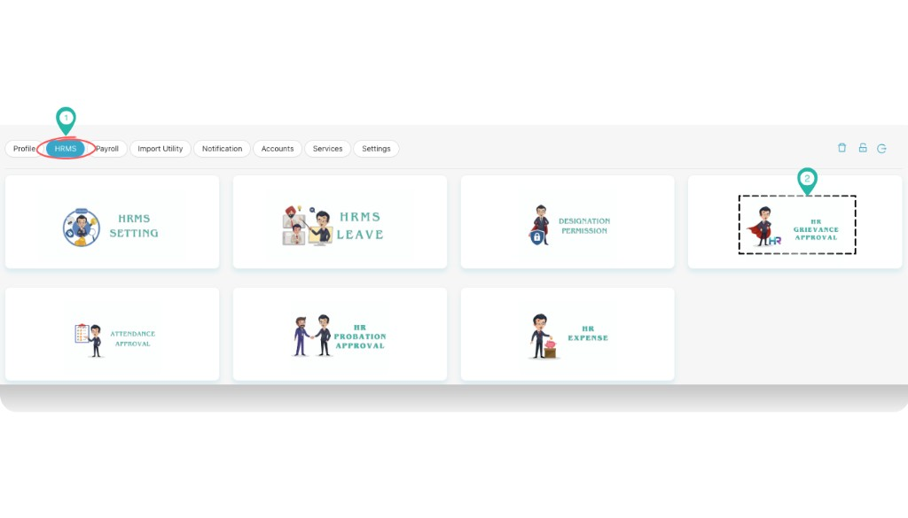
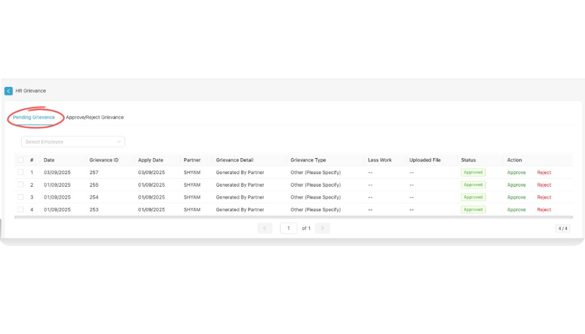
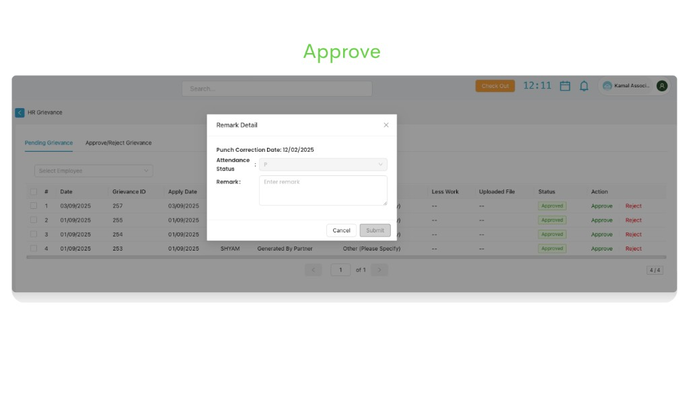
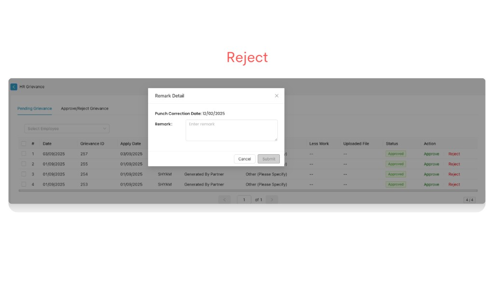
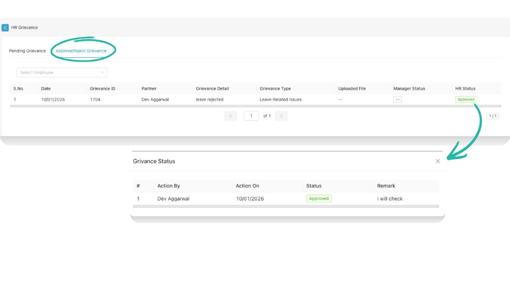

HR Grievance Approval
Use the HR Grievance Approval module (Part C HR Desk) to review and take action on employee grievances. Go to Dashboard → Profile settings → HRMS → HR Grievance Approval. Inside HR Grievance you get two options: Pending Grievance (where HR can approve or reject) and Approve/Reject Grievance (where you can see HR grievance status).
Path
How to open HR Grievance Approval
Go to Dashboard
From the left navigation, click Dashboard so that you are on the main dashboard view.

Select profile settings
In the top-right corner, click your profile name or the person icon (e.g. “Kamal Associ…”). From the menu, select Profile settings.
Select HRMS, then HR Grievance Approval
In profile settings, click HRMS in the top navigation. On the HR Desk screen, click the HR GRIEVANCE APPROVAL card.

HR Grievance screen
The HR Grievance screen opens with two tabs: Pending Grievance and Approve/Reject Grievance. Use the sections below to work with each tab.
a. Pending Grievance
In the Pending Grievance tab, HR can approve or reject each grievance. Use Select Employee to filter the list. The table shows grievance details; for each row you can click Approve (green) or Reject (red).

When you click Approve or Reject, a Remark Detail pop-up opens. You may see fields such as Punch Correction Date and Attendance Status (for punch-related grievances). Enter your Remark in the text area, then click Submit to confirm or Cancel to close without saving.


b. Approve / Reject Grievance
The Approve/Reject Grievance tab shows the HR grievance status for all processed grievances. Use Select Employee to filter. You can see who took action, when, and the final status. Clicking an HR Status value (e.g. Approved) opens a Grievance Status pop-up with action history (Action By, Action On, Status, Remark).

Table columns in Approve/Reject Grievance:
| Column | Description |
|---|---|
| S.No. | Serial number |
| Date | Date of the grievance |
| Grievance ID | Unique identifier for the grievance |
| Partner | Employee or partner who raised the grievance |
| Grievance Detail | Brief description of the grievance |
| Grievance Type | Category (e.g. Leave-Related Issues, Other) |
| Uploaded File | Attachment if any; otherwise — |
| Manager Status | Status set by the manager (if applicable) |
| HR Status | Status set by HR (e.g. Approved, Rejected). Click to view Grievance Status pop-up. |